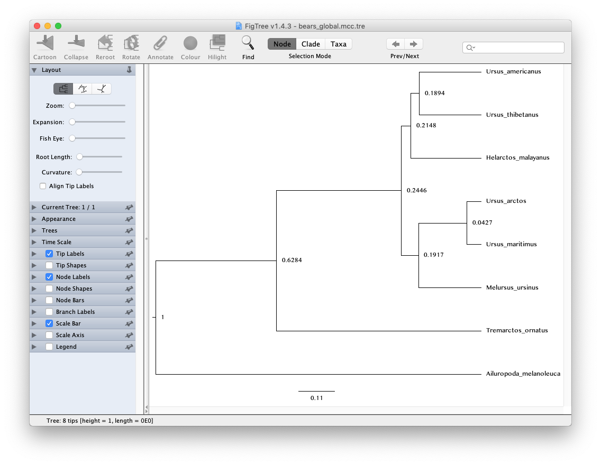

Exercise 1
In this exercise we will use molecular sequence data to estimate the relationships between extant species of bears and infer relative speciation times assuming a global (or strict) clock model. This model assumes that the rate of substitution is constant over time and across the tree.

The data
For this exercise we’ll use an alignment of 1,000 bp of cytochrome b sequences for 8 extant bear species. bears_cytb.nex contains the alignment in NEXUS format.
The master Rev script
Create a script in you scripts directory called MCMC_dating_ex1.Rev and open it in your text editor.
This is the master Rev file that loads the data, the files that specify different model component (e.g. the substitution model), the monitors that record the output and the MCMC sampler.
In this exercise you will create separate files for the substitution model, clock model and tree model.
Reading the data
First, we’ll begin the Rev script by importing the cytochrome b sequences and assign the data matrix to a variable called cytb.
cytb <- readDiscreteCharacterData("data/bears_cytb.nex")
At this stage we’ll also create some useful variables for later, including the number of taxa n_taxa and a vector of taxa that we can extract from the alignment data using cytb.taxa.
n_taxa <- cytb.size()
taxa <- cytb.taxa()
We will also create a workspace variable called moves and monitors.
This variable is a vector containing all of the MCMC moves and monitors respectively.
moves = VectorMoves()
monitors = VectorMonitors()
Don’t forget to save your changes at the end of each section!
The tree model
Create a script called tree_BD.Rev and open it in your text editor.
The birth-death process
This script will contain all the parameters in our birth-death tree model, which is used to describe the process that generated our tree. Since all of the taxa included in the analysis in this exercise are living species we’ll use a birth-death model that doesn’t incorporate the fossil recovery process. Two key parameters in this model are the speciation rate (the rate at which lineages are added to the tree, denoted by $\lambda$) and the extinction rate (the rate at which lineages are removed from the tree, $\mu$). We will assume that these rates are constant over time and place exponential priors on each of these. Each parameter is assumed to be drawn independently from a different exponential distribution with rates $\delta_\lambda$ and $\delta_\mu$, with $\delta_\lambda$ = $\delta_\mu$ = 10. Note an exponential distribution with $\delta = 10$ has an expected value (mean) of $1/\delta$ = 0.1.
Create the exponentially distributed stochastic nodes for speciation_rate and extinction_rate using the ~ operator.
speciation_rate ~ dnExponential(10)
extinction_rate ~ dnExponential(10)
For every stochastic node we declare, we must also specify moves (or proposal algorithms) to sample the value of the parameter in proportion to its posterior probability. If a move is not specified for a stochastic node, then it will not be estimated, but fixed to its initial value.
The rate parameters for extinction and speciation are both positive, real numbers (i.e. non-negative floating point variables). For both of these nodes, we will use a scaling move (mvScale), which proposes multiplicative changes to a parameter. Many moves also require us to set a tuning value, called lambda for mvScale, which determine the size of the proposed change. Here, we will also use tune=true, which will alter the magnitude of the proposed changes after an intital tuning phase. Note there are many different strategies available in RevBayes for improving mixing and convergence. See the tutorial [Diagnosing MCMC performance](/tutorials for more information on this topic.
moves.append( mvScale(speciation_rate, lambda=0.5, tune=true, weight=3.0) )
moves.append( mvScale(extinction_rate, lambda=0.5, tune=true, weight=3.0) )
The weight option allows you to indicate how many times you would like a given move to be performed at each MCMC cycle. In this tutorial we will run our MCMC for this tutorial will be to execute a schedule of moves at each step in our chain instead of just one move per step. Here, if we were to run our MCMC with our current vector of 6 moves, then our move schedule would perform 6 moves at each cycle. Within a cycle, an individual move is chosen from the move list in proportion to its weight. Therefore, with all six moves assigned weight=1, each has an equal probability of being executed and will be performed on average one time per MCMC cycle. For more information on moves and how they are performed in RevBayes, please refer to the Introduction to MCMC using RevBayes and Nucleotide substitution models tutorials.
In addition to the speciation ($\lambda$) and extinction ($\mu$) rates, we may also be interested in inferring diversification ($\lambda - \mu$) and turnover ($\mu/\lambda$). Since these parameters can be expressed as a deterministic transformation of the speciation and extinction rates, we can monitor (that is, track the values of these parameters, and print them to a file) their values by creating two deterministic nodes using the := operator.
diversification := speciation_rate - extinction_rate
turnover := extinction_rate/speciation_rate
$\rho$ is the probability of extant species sampling. Since we sample all extant bears, we’ll specify this probability as a constant node = 1.0 using the <- operator.
rho <- 1.0
Because $\rho$ is a constant node, we do not have to assign any moves to this parameter.
Since in this exercise our aim is to infer relative times only, we’ll simply fix the root age to an arbitrary value = 1.0. In this exercise the root is the MRCA of all living bears.
extant_mrca <- 1.0
Now that we’ve specified all of the parameters of the birth-death model, we can use these parameters to define the prior distribution on the tree topology and divergence times.
tree_dist = dnBDP(lambda=speciation_rate, mu=extinction_rate, rho=rho, rootAge=extant_mrca, samplingStrategy="uniform", condition="nTaxa", taxa=taxa)
Note that we created the distribution as a workspace variable using the workspace assignment operator =. This is because we still need to include a topology constraint in our final specification of the tree prior.
Clade constraints
In some cases we may want to constrain parts of the tree topology based on prior information. This is often necessary when we incorporate fossil calibration information, which we’ll do in subsequent tutorial exercises.
Here, we will constrain the group Ursinae to be monophyletic by first creating a vector of constraints.
clade_ursinae = clade("Melursus_ursinus", "Ursus_arctos", "Ursus_maritimus", "Helarctos_malayanus", "Ursus_americanus", "Ursus_thibetanus")
constraints = v(clade_ursinae)
Next, we will specify the final constrained tree prior distribution, providing the constraints along with the workspace birth-death distribution to the constrained topology distribution. Here we use the stochastic assignment operator ~ to create a stochastic node for our constrained tree variable timetree.
timetree ~ dnConstrainedTopology(tree_dist, constraints=constraints)
Moves on the tree
The final step in our tree model script is to add the moves for the tree topology (mvFNPR) and node ages (mvNodeTimeSlideUniform).
moves.append( mvNarrow(timetree, weight=n_taxa) )
moves.append( mvFNPR(timetree, weight=n_taxa/4) )
moves.append( mvNodeTimeSlideUniform(timetree, weight=n_taxa) )
Note there are lots of moves available for trees in RevBayes that you can use to improve the mixing, which you can learn about in other tutorials, including Divergence Time Calibration.
Monitoring node ages of interest
We may be interested in monitoring the age of a given node in our MCMC sample. We can do this by first using the clade function to specify the node of interest, as we have done above for Ursinae. Once a clade is defined we can instantiate a deterministic node, in this case age_ursinae, with the tmrca function that will record the age of this node.
age_ursinae := tmrca(timetree, clade_ursinae)
Note that if we had not included this clade in the constraints that defined the timetree variable this node would not be constrained to be monophyletic but we could still monitor the age using the tmrca approach.
The clock model
Next we’ll specify the clock (or branch-rate) model that describes how rates of substitution vary (or not) over the tree.
Create a script called clock_global.Rev and open it in your text editor.
In this exercise we’ll use the global molecular clock model that assumes rates are constant over time and across the tree. Specifying this model in RevBayes is very simple. For the branch-rates parameter we will use an exponential prior, with rate parameter $\delta_c$ = 10. Recall that the expected value (or mean) of this distribution is 0.1. The same branch-rate will apply to every branch in the tree.
Create the exponentially distributed stochastic node for branch_rates and assign a move to this parameter.
branch_rates ~ dnExponential(10.0)
moves.append( mvScale(branch_rates, lambda=0.5, tune=true, weight=3.0) )
The substitution model
The next step is to specify the model that describes how sequences evolve along the tree and across sites.
Create a script called sub_GTRG.Rev and open it in your text editor.
For this exercise we will use the general time-reversible (GTR) + $\Gamma$ model.
First, we need to define an instantaneous-rate matrix (i.e. a Q-matrix). A nucleotide GTR matrix is defined by a set of 4 stationary frequencies, and 6 exchangeability rates. Create stochastic nodes for these variables, each drawn from a uniform Dirichlet prior distribution.
sf_hp <- v(1,1,1,1)
sf ~ dnDirichlet(sf_hp)
er_hp <- v(1,1,1,1,1,1)
er ~ dnDirichlet(er_hp)
We need special moves to propose changes to a Dirichlet random variable, also known as a simplex (a vector constrained to sum to one). Here, we use a mvSimplexElementScale move, which scales a single element of a simplex and then renormalises the vector to sum to one. The tuning parameter alpha specifies how conservative the proposal should be, with larger values of alpha leading to proposals closer to the current value.
moves.append( mvSimplexElementScale(er, alpha=10.0, weight=3.0) )
moves.append( mvSimplexElementScale(sf, alpha=10.0, weight=2.0) )
Then we can define a deterministic node for our GTR Q-matrix using the special GTR matrix function (fnGTR).
Q_cytb := fnGTR(er,sf)
Next, in order to model gamma-distributed rates across sites, we will create an exponential parameter $\alpha$ for the shape of the gamma distribution, along with scale proposals.
alpha_cytb ~ dnUniform(0.0,1E6)
alpha_cytb.setValue( 1.0 )
moves.append( mvScale(alpha_cytb, lambda=0.5, tune=true, weight=2.0) )
Then we create a gamma distribution, discretized into 4 rate categories using the fnDiscretizeGamma function. Here, rates_cytb is a deterministic vector of rates computed as the mean of each category.
rates_cytb := fnDiscretizeGamma(alpha_cytb, alpha_cytb, 4)
Finally, we can create the phylogenetic continuous time Markov chain (PhyloCTMC) distribution for our sequence data, including the gamma-distributed site rate categories, as well as the branch rates defined as part of our clock model. We set the value of this distribution equal to our observed data and identify it as a static part of the likelihood using the clamp method.
phySeq ~ dnPhyloCTMC(tree=timetree, Q=Q_cytb, siteRates=rates_cytb, branchRates=branch_rates, type="DNA")
phySeq.clamp(cytb)
Setting up the MCMC
Return to the master script MCMC_dating_ex1.Rev.
RevBayes uses the source function to load commands from Rev files into the workspace. Use this function to load in the model scripts you have written in the text editor and saved in the scripts directory.
source("scripts/tree_BD.Rev") # BD tree prior
source("scripts/clock_global.Rev") # the global clock model
source("scripts/sub_GTR.Rev") # the GTR model
We can now create our workspace model variable with our fully specified model DAG. We will do this with the model function and provide a single node in the graph (sf).
mymodel = model(sf)
The object mymodel is a wrapper around the entire model graph and allows us to pass the model to various functions that are specific to our MCMC analysis.
The next important step for our master Rev file is to specify the monitors and output file names. For this, we will create a vector called monitors that will each sample and record or output our MCMC.
The first monitor we will create will monitor every named random variable in our model graph. This will include every stochastic and deterministic node using the mnModel monitor. The only parameter that is not included in the mnModel is the tree topology. Therefore, the parameters in the file written by this monitor are all numerical parameters and will be written to a tab-separated text file that can be opened by accessory programs for evaluating such parameters. We will also name the output file for this monitor and indicate that we wish to sample our MCMC every 10 cycles.
monitors.append( mnModel(filename="output/bears_global.log", printgen=10) )
The mnFile monitor writes any parameter we specify to file. Thus, if we only cared about the speciation rate and nothing else (this is not a typical or recommended attitude for an analysis this complex) we wouldn’t use the mnModel monitor above and just use the mnFile monitor to write a smaller and simpler output file. Since the tree topology is not included in the mnModel monitor (because it is not numerical), we will use mnFile to write the tree to file by specifying our timetree variable in the arguments.
monitors.append( mnFile(filename="output/bears_global.trees", printgen=10, timetree) )
The last monitor we will add to our analysis will print information to the screen. As with mnFile we must tell mnScreen which parameters we’d like to see updated on the screen. We will choose the age of the MRCA of living bears (extant_mrca) and the diversification rate (diversification) parameters.
monitors.append( mnScreen(printgen=10, extant_mrca, diversification, branch_rates) )
Once we have set up our model, moves, and monitors, we can now create the workspace variable that defines our MCMC run. We do this using the mcmc function that simply takes the three main analysis components as arguments.
mymcmc = mcmc(mymodel, monitors, moves, nruns=2, combine="mixed")
The MCMC object that we named mymcmc has a member method called run. This will execute our analysis and we will set the chain length to 20000 cycles using the generations option.
mymcmc.run(generations=20000, tuningInterval=200)
After the Markov chain has completed, we can create a summary tree. We’ll use the function readTreeTrace to read the MCMC sample of trees from file and the command mccTree to generate the maximum clade credibility (MCC) tree.
trace = readTreeTrace("output/bears_global.trees")
mccTree(trace, file="output/bears_global.mcc.tre")
Note by default, a burn-in of 25% is used when creating the tree trace (250 trees in our case). You can specify a different burn-in fraction, say 50%, by typing the command trace.setBurnin(500).
Once all our analysis is complete, we will want RevBayes to close. Tell the program to quit using the q() function.
q()
Execute your MCMC analysis in RevBayes!
Examining the output
Open the program Tracer and load the log file
bears_global.log.
Evaluate the mixing and convergence of your MCMC analysis, and examine the marginal distributions of parameters of interest. For publication quality analysis you would probably want to run multiple independent MCMC chain and increase your chain length, but you should be able to see that the chain is mixing quite well.

Note that the speciation and extinction rates are not especially meaningful because we don’t they’re not in absolute time.
The tree output
In addition to evaluating the performance and sampling of an MCMC run using numerical parameters, it is also important to inspect the sampled topology and tree parameters. This is a difficult endeavor, however. One tool for evaluating convergence and mixing of the tree samples is RWTY (Warren et al. 2016). In this tutorial, we will only summarize the sampled trees, but we encourage you to consider approaches for assessing the performance of the MCMC with respect to the tree topology.
Ultimately, we are interested in summarizing the sampled trees and branch times given that our MCMC has sampled all of the important parameters in proportion to their posterior probabilities. RevBayes includes some functions for summarizing the tree topology and other tree parameters, including the mccTree that we used in this exercise.
Open the program FigTree and load MCC tree file
bears_global.mcc.tre.

Note that because our analysis did not contain any temporal information from the fossil record and instead we fixed the age of the root to 1, the units of the scale bar are arbitrary and the node ages can only be interpreted as relative speciation times.
In the following exercise we’ll relax the assumption of a global molecular clock.
Click below to begin the next exercise!
Further reading
For further options and information about clock models see Tracy Heath’s tutorial Relaxed Clocks & Time Trees.